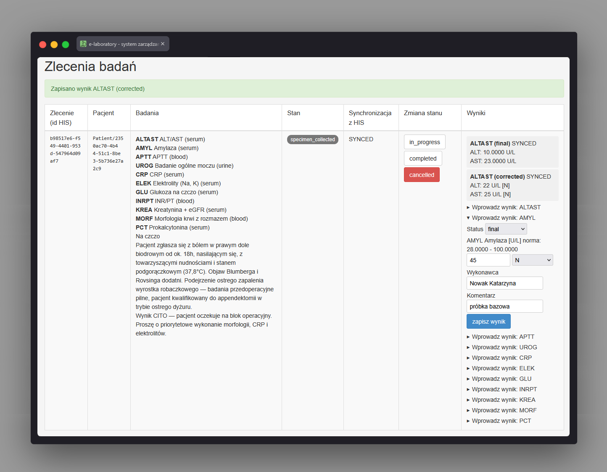

e-laboratory (system zewnętrzny) LabUiController
Ścieżka
Ten ekran nie jest częścią aplikacji HIS
(Angular) i nie jest osiągalny przez nawigację HIS. Należy do
zupełnie odrębnego systemu - mockowego laboratorium
e-laboratory (Spring Boot + Thymeleaf), działającego
jako osobna aplikacja na własnym porcie: interfejs UI tego
systemu jest wystawiony na porcie 10432
(mtls.http-port, zmienna
E_LABORATORY_UI_PORT, profil mtls) - z
zakresu portów 10431-10433 wydzielonego dla paneli systemów
zewnętrznych. Osobny port (10422) obsługuje kanał
mTLS/FHIR do komunikacji z HIS. Sam adres /ui/orders
nie wymaga uwierzytelnienia - to mock do celów
demonstracyjnych/testowych.
Do e-laboratory nie prowadzi żaden link z HIS. Zlecenie trafia tam
wyłącznie w wyniku integracji backendowej: HIS wysyła je jako
zasób FHIR ServiceRequest po kanale mTLS,
e-laboratory zapisuje je u siebie
(LabOrderStore/LabOrderService). Od tego
momentu operator tego ekranu - symulowany technik laboratoryjny -
pracuje na zleceniu niezależnie od HIS, a wynik oraz zmiany stanu
są odsyłane do HIS również po mTLS jako
DiagnosticReport/aktualizacja
ServiceRequest.
Przeznaczenie
Jedyny ekran mockowego systemu laboratoryjnego
(LabUiController, pakiet
robert_neat.elaboratory.ui, korzystający z usług
domenowych z pakietu
robert_neat.elaboratory.order: LabOrderStore/LabOrderService/LabOrderStatus):
lista zleceń wraz z możliwością zmiany ich stanu oraz
wprowadzenia wyników badań.
Symuluje pracę technika laboratoryjnego, który przeprowadza
zlecenie przez kolejne etapy (pobranie materiału, analiza, wynik)
tak, jak działoby się to w realnym systemie laboratoryjnym
podłączonym do HIS.
Widok ma dwie zakładki: Aktywne (zlecenia niezakończone)
i Historia (zlecenia completed lub
cancelled).
Dane wejściowe
-
Wybór zakładki
Aktywne/Historia(parametrview). -
Wybór nowego stanu zlecenia z przycisków dozwolonych przejść
(zgodnie z
LabOrderStatus.canMoveTo):ordered→scheduled/specimen_collected/cancelled;scheduled→specimen_collected/cancelled;specimen_collected→in_progress/completed/cancelled;in_progress→completed/cancelled. Stanycompletedicancelledsą terminalne - brak dalszych przejść. -
Formularz wyniku dla badania w zleceniu (widoczny, gdy stan to
specimen_collectedlubin_progress, a także w staniecompleted- tam dozwolona jest tylko korekta wyniku): status wyniku (listaResultStatus: wstępny/ostateczny/skorygowany, domyślnie ostateczny), dla każdego analitu badania wartość (v_{kodAnalitu}- liczba lub tekst, puste pole pominięte) i flaga (f_{kodAnalitu}: N, L, H, LL, HH, A lub "auto" - wyznaczana przez HIS), a także pola wykonawcy (domyślnie "e-laboratory") i komentarza. -
Przycisk "ponów wysyłkę do HIS"/"ponów wysyłkę wyniku" -
widoczny, gdy ostatnia zmiana stanu lub wynik nie zostały
potwierdzone przez HIS (
SyncState.PENDING).
Akcje
- Wyświetla listę zleceń odebranych z HIS z identyfikatorem zlecenia w HIS, referencją pacjenta, badaniami i ich materiałem, informacją "na czczo", uwagami, bieżącym stanem, stanem synchronizacji z HIS oraz już zapisanymi wynikami (status, obserwacje z flagami, stan synchronizacji).
-
Zmienia stan zlecenia (
POST /ui/orders/{id}/status): najpierw przekazuje zmianę do HIS jako aktualizację FHIRServiceRequest(PUT /ServiceRequest/{id}po mTLS); odrzucenie przez HIS blokuje zmianę lokalną, a niedostępność HIS zapisuje zmianę lokalnie ze stanem oczekującym na ponowienie. -
Ponawia przekazanie bieżącego stanu zlecenia do HIS (
POST /ui/orders/{id}/sync). -
Zapisuje wynik badania (
POST /ui/orders/{id}/results/{testCode}): buduje obserwacje z wprowadzonych wartości i flag, odrzuca nieznaną flagę, a następnie przekazuje wynik do HIS jako zasób FHIRDiagnosticReport(POST /DiagnosticReportpo mTLS, powiązany ze zleceniem przezServiceRequest); nieudana synchronizacja pozwala na ponowienie. Gdy wszystkie pozycje zlecenia mają zatwierdzony i przekazany wynik, zlecenie przechodzi automatycznie do stanucompleted. -
Ponawia wysyłkę pojedynczego wyniku do HIS (
POST /ui/orders/{id}/results/{resultId}/sync); po powodzeniu również sprawdza, czy zlecenie można automatycznie zamknąć jakocompleted. - Po każdej akcji wyświetla komunikat powodzenia lub błędu i odświeża listę zleceń.
Zrzut ekranu
